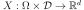
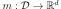

NonStationaryCovarianceModelFactory¶
(Source code, png, hires.png, pdf)
{kind=link}
{kind=link}
-
class
NonStationaryCovarianceModelFactory(*args)¶ Estimation of a non stationary covariance model.
Notes
We consider  be a multivariate process of dimension d where
 .
We denote
.
We denote  the vertices of the mesh
the vertices of the mesh  .
.X is supposed to be a second order process and we note its covariance function. X may be stationary or non stationary as well.
We suppose that we have K fields and we note the values of the field k on the mesh
 .
.We recall that the covariance function C writes:
where the mean function  is defined by:
First, we estimate the covariance function C on the vertices of the mesh
using the empirical mean estimator:Then, we build a covariance function defined on which is a piecewise constant function defined on by:
where k is such that
 is the vertex of the nearest to and the nearest to .
is the vertex of the nearest to and the nearest to .Methods
build(*args)Estimate the covariance model. buildAsUserDefinedCovarianceModel(sample[, …])Estimate the covariance model as a User defined covariance model. getClassName()Accessor to the object’s name. getId()Accessor to the object’s id. getName()Accessor to the object’s name. getShadowedId()Accessor to the object’s shadowed id. getVisibility()Accessor to the object’s visibility state. hasName()Test if the object is named. hasVisibleName()Test if the object has a distinguishable name. setName(name)Accessor to the object’s name. setShadowedId(id)Accessor to the object’s shadowed id. setVisibility(visible)Accessor to the object’s visibility state. -
__init__(*args)¶ x.__init__(…) initializes x; see help(type(x)) for signature
-
build(*args)¶ Estimate the covariance model.
Parameters: sampleFields :
ProcessSampleThe fields used to estimate the covariance model which is not supposed to be stationary.
Returns: covEst :
CovarianceModelImplementationThe estimated covariance model.
Examples
Create the covariance model, a mesh and a process:
>>> import openturns as ot >>> myModel = ot.AbsoluteExponential([0.1]*2) >>> myMesh = ot.IntervalMesher([10]*2).build(ot.Interval([0.0]*2, [1.0]*2)) >>> myProcess = ot.GaussianProcess(myModel, myMesh)
Generate 10 fields:
>>> mySample = myProcess.getSample(10)
Estimate the covariance model without supposing the stationarity:
>>> myEstCov = ot.NonStationaryCovarianceModelFactory().build(mySample)
-
buildAsUserDefinedCovarianceModel(sample, isCentered=False)¶ Estimate the covariance model as a User defined covariance model.
Parameters: sampleFields :
ProcessSampleThe fields used to estimate the covariance model which is not supposed to be stationary.
Returns: covEst :
UserDefinedCovarianceModelThe estimated covariance model that can be used as a
UserDefinedCovarianceModel.
-
getClassName()¶ Accessor to the object’s name.
Returns: class_name : str
The object class name (object.__class__.__name__).
-
getId()¶ Accessor to the object’s id.
Returns: id : int
Internal unique identifier.
-
getName()¶ Accessor to the object’s name.
Returns: name : str
The name of the object.
-
getShadowedId()¶ Accessor to the object’s shadowed id.
Returns: id : int
Internal unique identifier.
-
getVisibility()¶ Accessor to the object’s visibility state.
Returns: visible : bool
Visibility flag.
-
hasName()¶ Test if the object is named.
Returns: hasName : bool
True if the name is not empty.
-
hasVisibleName()¶ Test if the object has a distinguishable name.
Returns: hasVisibleName : bool
True if the name is not empty and not the default one.
-
setName(name)¶ Accessor to the object’s name.
Parameters: name : str
The name of the object.
-
setShadowedId(id)¶ Accessor to the object’s shadowed id.
Parameters: id : int
Internal unique identifier.
-
setVisibility(visible)¶ Accessor to the object’s visibility state.
Parameters: visible : bool
Visibility flag.
-